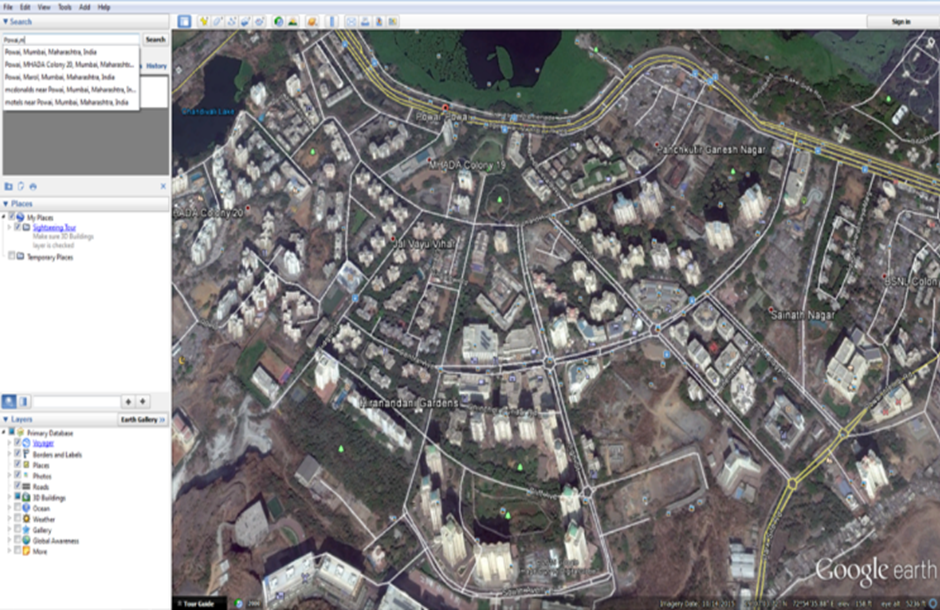

Mumbai is now one of the fastest developing cities in the world. Opinions are often in extremes. While some people think this development has been possible due to a well thought and executed set of plans there are others pointing to the mess and chaos. However, the urban chaos is not seen only in Mumbai. It is a global phenomenon. To stem the chaos, the parliament passed a resolution to make participation of the citizens mandatory in city’s development. It is as per that act of 1994 by parliament that, the latest urban development plan was released by the BMC in 2015. This data was issued to the public. The format however, was not really in a way that could be easily understood or used. It was just raw data. Using GIS, this system aims at improving the quality of the provided data. The information will be digitized and added to the survey maps provided by the BMC. This mapping will be done over in several steps and will need various software such as QGIS, GeoNode (that includes geoserver, postgresql and postgis), Cartoview, ODK, etc. This platform will provide a better and understandable data format. In such a system, incorrect data can be checked as participation of the people leads to a better insight. The data provided was based on research from a foreign company appointed by MC. However, that data was not in complete sync with the actual state. All these issues can be resolved with the proposed system and it will also help keep track of the development taking placed and to check what tasks were promised, have been fulfilled, are being fulfilled or are being overlooked. This technology could revolutionize the implementation of the urban development plan and could have a real impact towards realizing the goal that has been set out, for a bigger, better and smarter city.<